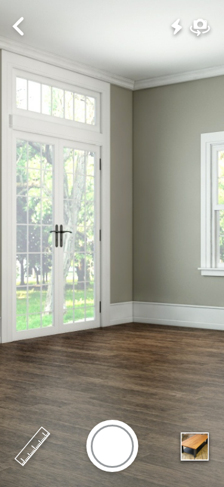
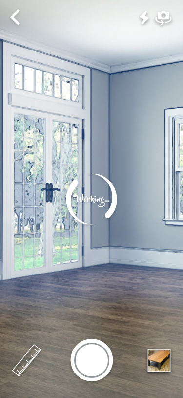
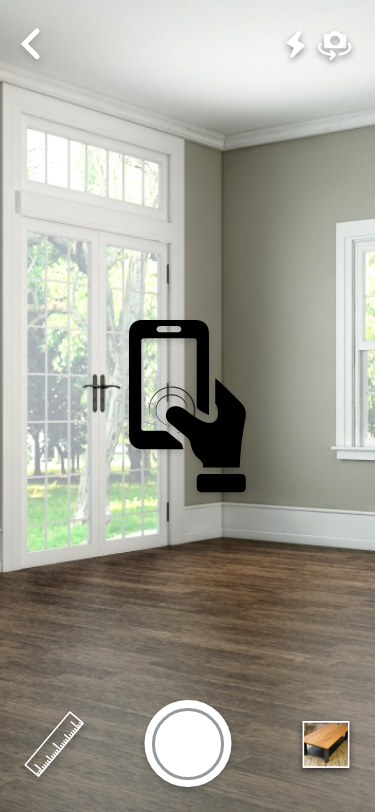
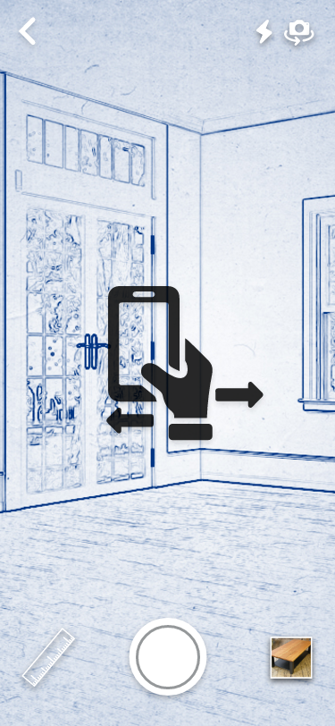
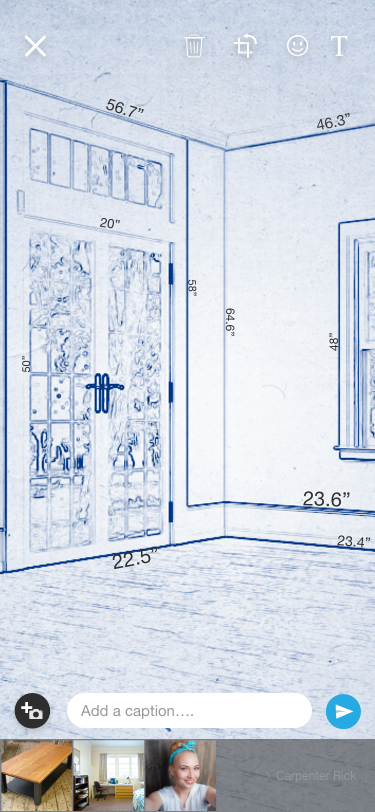
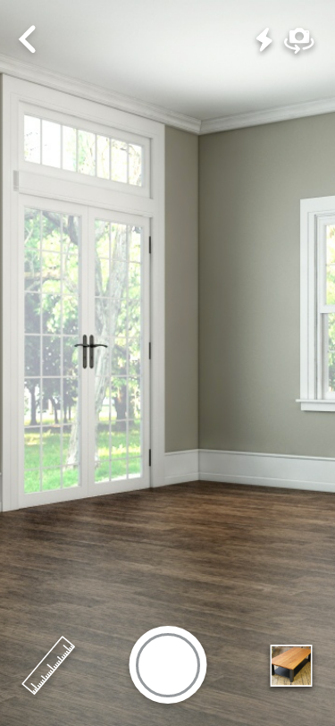
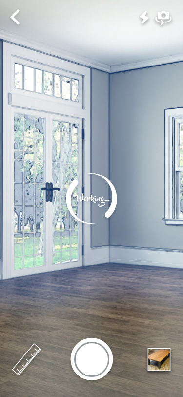
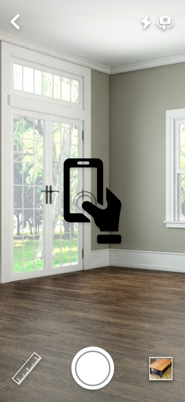
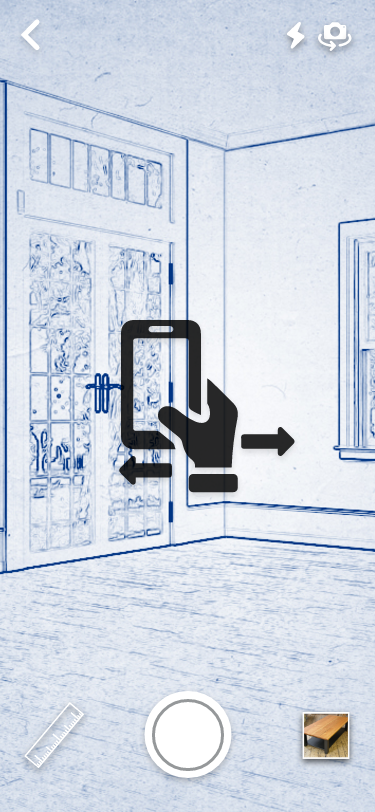
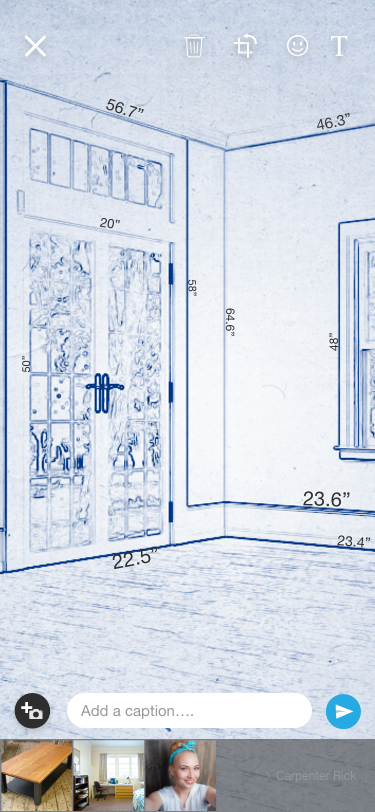


 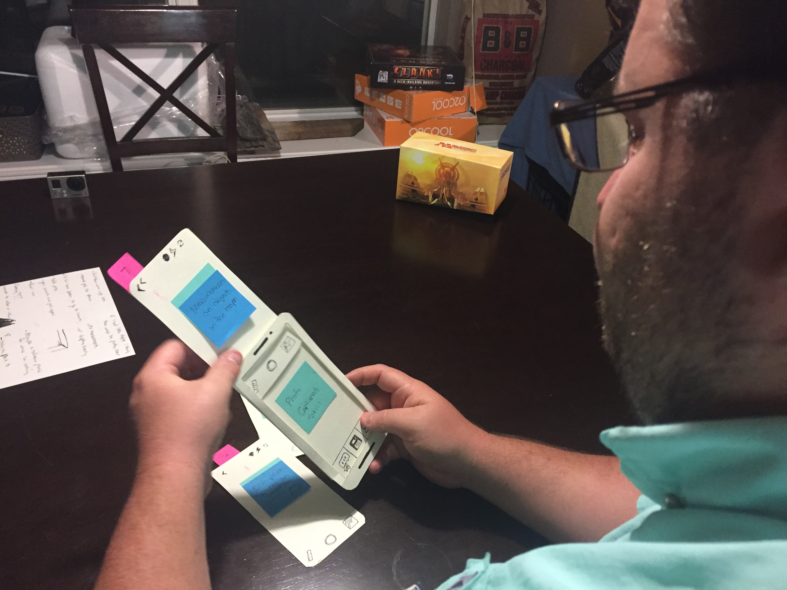
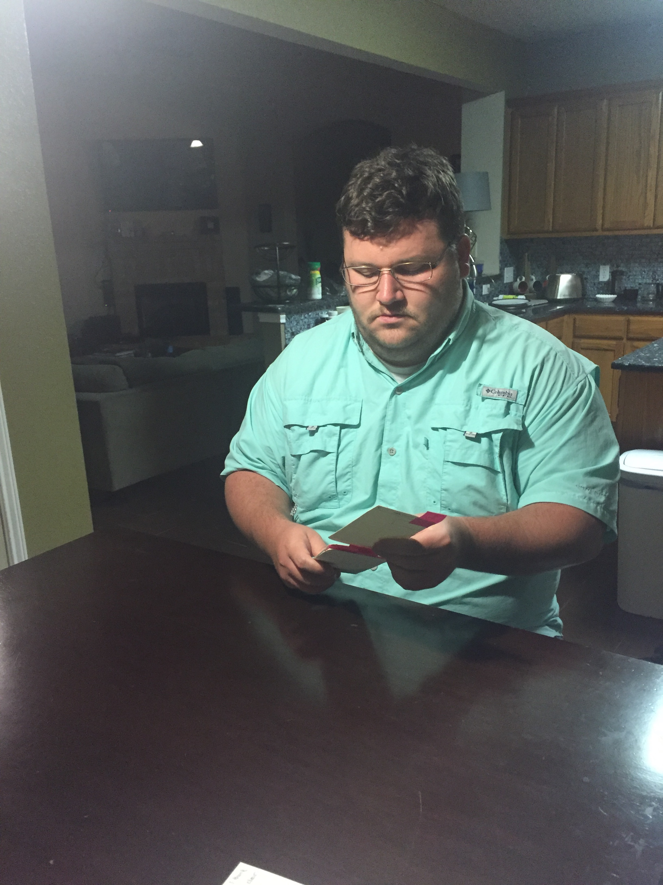
User Testing Video #1
User Testing Video #2
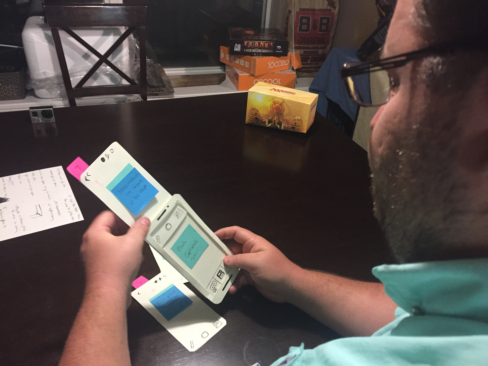
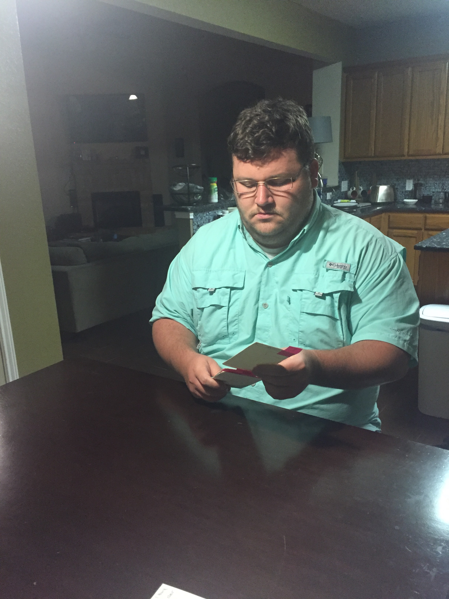
User Testing Video #1
User Testing Video #2
I started from a paper protype that allows for usability testing to be done on the user's nativagation getting to the feature. I found that using the paper protoype lacked the visuals to draw the user in. It wasn't clear why someone would use the feature when presented in paper
In creating interfaces and re-vamping my usability testing to focus more about how the feature works I found that people enjoyed working int the app once things were visually simpler.
Ideally I would like showing the augmented reality function in gif format or a video that shows the movement of the lines working. I think this would engage the user to ask more questions and give new feedback